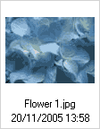

"Asetukset"-nappi ty枚kalurivill盲 avaa "Asetusruudun", jossa voit konfiguroida ja muokata CKFinderia. T盲ss盲 kuvaruutukaappaus:
Kaikki asetukset tallennetaan hy枚dynt盲en selaimen ev盲steit盲 (cookies). Ev盲steet, "keksit", ovat pieni盲 tiedostoja, jotka sis盲lt盲v盲t k盲ytt盲j盲kohtaisia konfigurointiasetuksia. Kullekin sivustolle on oma ev盲steens盲.
Napsauta "Sulje"-nappia tai "Asetukset"-nappia toistamiseen sulkeaksesi asetusruudun.
Kaikki konfigurointivalinnat liittyv盲t tiedostoruutuun. Niit盲 k盲ytet盲盲n tietoruudun informaation esitt盲mistavan valitaan. Tiedostoruutu reagoi v盲litt枚m盲sti asetusmuutoksiin.
Hallinnoi n盲kym盲tyypin valintaa tiedostoruudussa:
Asettaa n盲ytett盲v盲n informaation m盲盲r盲n tiedostoruudulle. Esimerkkin盲 n盲ytet盲盲n alla vaihtoehdot eri informaatiom盲盲r盲valinnoilla:
 |
 |
 |
 |
Asettaa j盲rjestyksen, jossa tiedostot n盲ytet盲盲n: aakkosj盲rjestyksess盲 tiedostonimien perusteella, tiedoston luontip盲iv盲m盲盲r盲n mukaan (uusimmat ensin) tai tiedostokoon mukaisesti.